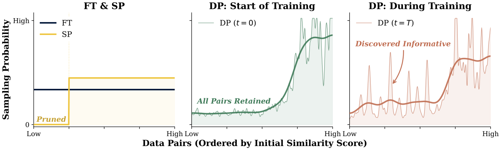
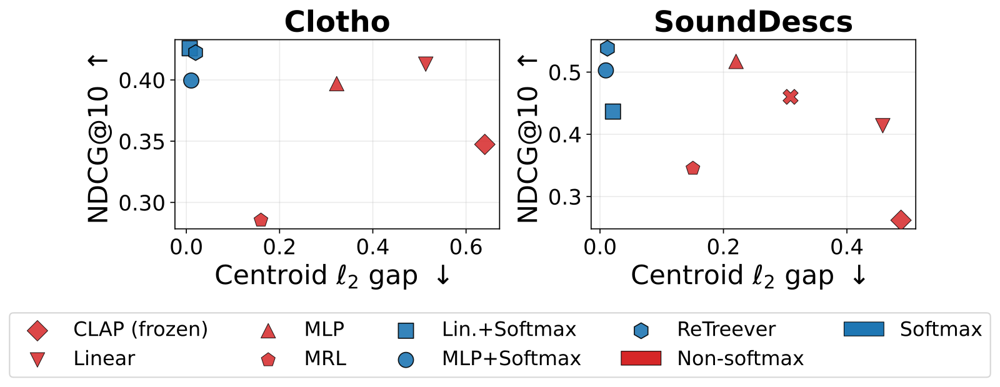

标注数据有限时，检索模型最好能训到多好，可以用一条规律提前算出来。作者把训练全程验证损失的最低点叫 MAEL，用它衡量一个模型大小和数据量组合的上限。在 MS MARCO 的不同大小子集上微调 35 个 BERT 系列检索模型后，MAEL 能被模型参数量和不重复样本数相乘的幂律准确拟合，比常用的相加形式更准。在 BERT-Medium 上，学习率主要影响多快到达最低点，几乎不影响最低点有多低。按拟合出的规律，微调算力每多花同样的倍数，换更大的预训练模型让损失按比例下降的幅度，约是多加域内数据的 1.46 倍。在这组实验的范围内、只算微调算力时，标注有限就先换更大的模型更划算。
这篇值得做检索模型微调的团队读。标注有限时，该换更大的预训练模型还是多攒标注，它给出了可以照着算的公式。要注意，所有结论都来自 BERT 系列和 MS MARCO，模型最大只到 BERT-Base。
它衡量的是什么
作者关心的是：给定模型大小和不重复的标注数量，这个组合最好能训到什么程度。
标注少的时候，同一批数据要反复训很多轮。验证损失先降后升，后半段就是过拟合。作者把整个训练过程里验证损失的最低点叫 MAEL（最低可达验证损失）。这里的检索模型把查询和段落各自编码成向量，用向量相似度打分。训练目标是 InfoNCE 对比损失，每条正确的查询-段落对配 256 个随机抽的负例段落。训练过程中，作者定期在一份所有实验共用的固定评测数据上算这个损失，这就是验证损失。
MAEL 不进入训练目标。它决定取哪个检查点：每次训练都取验证损失最低的那个检查点，相当于提前停止。后面挑权重衰减时，也是选让 MAEL 最低的那个值。
学习率几乎不改变最低点
如果换个学习率最低点就变，MAEL 就没法当成组合本身的属性。作者在 BERT-Medium 上试了多个学习率，数据量从 5K 到 320K。
结果是：学习率改变的是到达最低点要走多少步，不改变最低点有多低。把训练步数乘上学习率，再除以最大的学习率 2×10⁻⁵，当作新的横轴。换了横轴后，不同学习率的验证损失曲线几乎重合。同一个数据量下，五种能在训练中到达最低点的学习率之间，MAEL 的标准差平均只有 0.008。作为对比，同样在 BERT-Medium 上改变数据量，MAEL 能差 0.656。作者还用 1,024 对查询和段落比较了不同学习率下到达 MAEL 的检查点。CKA（表征相似度，衡量两个模型对同一批输入给出的向量有多像）接近 1。

相乘的幂律拟合得最好
主实验是一张 5×7 的网格：5 个模型是 BERT-Tiny、Mini、Small、Medium、Base，7 档数据从 5K 到 320K 条不重复的查询-段落对，一共 35 个组合。不重复样本数指训练集里有多少条不同的标注，同一条反复训只算一次。模型参数量只算词嵌入以外的参数。所有组合用同一套训练设置，只有学习率随模型变大逐级减半。

在对数坐标下，MAEL 随模型大小和数据量都近似一条直线，而且不同数据量的直线大致平行。平行的意思是：多给数据，整条线往下平移，斜率不变。这正是相乘形式描述的关系：MAEL 等于一个常数乘以模型参数量的负幂，再乘以数据量的负幂。
作者拿它和两种常用的相加形式比。相加形式假设模型不够和数据不够各自贡献一份损失，互不影响。相乘形式拟合得最好：
| 拟合形式 | R² | RMSE |
|---|---|---|
| 相乘形式 | 0.99 | 0.035 |
| Chinchilla 式相加形式 | 0.96 | 0.076 |
| Kaplan 式 | 0.88 | 0.133 |
拟合好不等于能预测。作者又做了留出验证：去掉某一个模型的全部数据点，或者某一档数据量的全部数据点，用剩下的拟合，再预测去掉的那些。预测的平均相对误差在 2.77% 到 3.28% 之间，最大的单点误差接近 10%。只用小模型和 80K 以内的数据拟合，去预测最大的 BERT-Medium、BERT-Base 配 160K、320K 那 4 个点，平均相对误差是 4.45%。
损失低，检索也真的好
MAEL 低不一定意味着检索好，所以作者直接检查。35 个组合各取到达 MAEL 的那个检查点，在 MS MARCO 验证集上测检索。MAEL 和 MRR@10、Recall@100、nDCG@10、MAP@10 的皮尔逊相关在 -0.985 到 -0.995 之间。按排名算的斯皮尔曼相关约 -0.996。所以按 MAEL 排出的顺序，和按检索指标排出的顺序几乎一样。
同样的算力，该花在哪
要比较花钱的方式，还要知道训到最低点需要多少步。作者又拟合了一条步数规律：模型越大，需要的步数越少；数据越多，需要的步数越多。拟合结果是，步数大约和模型参数量的 -0.5064 次方成正比，和数据量的 0.9231 次方成正比。
微调算力约等于模型大小乘以步数。所以算力大约和模型参数量的 0.4936 次方、数据量的 0.9231 次方成正比。
损失这边，拟合出的 MAEL 大约和模型参数量的 -0.161 次方、数据量的 -0.206 次方成正比。
把损失的指数除以算力的指数，就是每种花法的效率，意思是算力每翻同样的倍数，损失按比例降多少。模型这边约 0.3262，数据这边约 0.2234。两者相除约 1.46，所以花在模型上更划算。 Hoot 说

三步都只用本节拟合出的指数，模型翻倍是示意。看懂这一例，就明白两个效率为什么能直接比：同样的算力，换大模型带来的下降比少掉的数据带来的回升更多。 出处: 论文的步数规律与 MAEL 拟合指数（正文本节）；模型翻倍为示意
两个效率不相等，所以总算力固定时，把预算往效率高的一边挪，损失就会一直下降。
这还意味着没有一个最好的中间配比。总算力固定时，从"模型小、数据多"往"模型大、数据少"挪，损失一直朝同一个方向变。按拟合出的数值，越往大模型那边挪，损失越低。
作者又做了实测对照，想确认这个偏向不只是相乘形式本身带来的。对照组用相加形式自己算出的最优配比：BERT-Medium 配大约 41.2K 条数据。花差不多的算力，改成 BERT-Base 配 21.7K 条数据。实测时用的是最接近这两个配比的实验配置。BERT-Base 多用了 8% 的算力，MAEL 是 0.690，低于 BERT-Medium 的 0.720。
权重衰减还能再降低 MAEL
作者还在 BERT-Small 上扫了权重衰减。最优的权重衰减系数会随数据量变化。但学习率、权重衰减系数、数据量三者的乘积，在不同数据量下的最优点大致相同。所以数据量减半，权重衰减系数就翻倍。320K 数据用的系数是 2；学习率很小时，这个系数会大到 100 左右的量级，不要照搬常见的小数值。用这个设置训出的 BERT-Small，在 MS MARCO 上，以及 NQ（自然问题问答）、HotpotQA（多跳问答）、FiQA（金融问答）三者的平均上，检索指标都比不加权重衰减更好。
我觉得不足的地方
实验的模型规模偏小。最大的模型是 BERT-Base，约 8600 万非 embedding 参数。今天常用的检索模型大得多，规律能不能外推到那里，论文没有测。
训练数据只来自一个数据集。所有拟合都在 MS MARCO 上做，换到别的领域，指数可能不同。
1.46 倍只算了微调的算力。论文也说明了，更大的预训练模型本身的训练成本不算在微调预算里。上线时的推理成本同样没算进去。对线上检索来说，模型变大意味着每次查询更慢、更贵，这笔账要自己补。
实测对照只有一组，而且两边的算力差了 8%，作为验证还偏薄。
主实验固定了不加权重衰减、每个模型一个学习率。拟合出的规律对应这套设置，换了训练设置要重新拟合。
检索团队怎么用
如果你在微调自己的检索模型，标注又不多，可以先在小模型和小数据上跑几组，记下每组的最低验证损失，拟合一条相乘的幂律，再估更大配置的效果。
选检查点时取验证损失的最低点。学习率不必精调，只要训到验证损失开始回升。数据量变化时，按学习率、权重衰减和数据量乘积不变的思路调权重衰减。
决定把钱花在大模型还是更多标注之前，先把上线的推理成本算进去。
结论
这篇把"数据有限时怎么花微调预算"变成了能算的问题。最低验证损失既稳定又和检索指标高度一致，相乘的幂律能较准地预测它。结论在 BERT 和 MS MARCO 的范围内可信，换到大模型和别的领域之前需要自己再验一遍。
读完这篇，你觉得
夜读鸮记下了，谢谢你的反馈。
点一下即可，无需登录；再点一次撤回。只统计匿名次数，不记录你是谁。
相关论文RELATED

Retrieval · 2026-03-20OPERA: Online Data Pruning for Efficient Retrieval Model Adaptation稠密检索模型做领域微调时，按相似度删掉“差”的训练对会让排序涨、召回掉，因为删对之后 query 的抽样概率跟着变了，正样本少的 query 甚至整个消失。OPERA 不删数据，只在 query 和文档两级调采样概率，并随训练推进逐渐偏向高分样本。在 bge-large-en-v1.5 和 8 个数据集上，动态版平均 NDCG@10 从 0.535 到 0.545，在 FEVER 上用不到一半的迭代追平标准微调。提升不大，也缺多次种子的方差，适合当作采样器里的低成本改动来试。 Retrieval · 2026-10-28CA-HNM: Constraint-Aware Hard Negative Mining for Dense Retrieval with Structured Domain Models训练稠密检索时，难负例一般取检索排在前面、但没被标成正例的文档，可排得靠前只说明它和 query 像，说明不了它为什么不该被召回。CA-HNM 借助课程知识图谱查每个候选错在哪：讲的知识点不对、范围偏了或难度级别对不上，只把这类冲突明确的候选留作负例。和同样检索位置取负例、但不看图谱的对照相比，它在多数设置下效果更好；可在一个数据集上把图谱关系随机打乱，NDCG@10 反而从 0.0311 升到 0.1174，图谱到底帮了多少还要打个问号。
Retrieval · 2026-10-28CA-HNM: Constraint-Aware Hard Negative Mining for Dense Retrieval with Structured Domain Models训练稠密检索时，难负例一般取检索排在前面、但没被标成正例的文档，可排得靠前只说明它和 query 像，说明不了它为什么不该被召回。CA-HNM 借助课程知识图谱查每个候选错在哪：讲的知识点不对、范围偏了或难度级别对不上，只把这类冲突明确的候选留作负例。和同样检索位置取负例、但不看图谱的对照相比，它在多数设置下效果更好；可在一个数据集上把图谱关系随机打乱，NDCG@10 反而从 0.0311 升到 0.1174，图谱到底帮了多少还要打个问号。 Retrieval · 2026-10-26What the Query Remembers: Query Abstraction Governs Lexical and Dense Retrieval of Classical Arabic Poetry在古典阿拉伯诗歌库里找诗，关键词检索 BM25 和向量模型谁更好？这篇论文发现，答案主要取决于用户还记得多少原文。用户半记得几句原话时，BM25 比 9 个向量模型都好；用户只能描述诗讲了什么时，BM25 掉到 10 个系统里的第 8 名。作者通过改写同一批查询证明，排名主要由查询里有没有原文决定：给查询补上半句原诗，BM25 的召回率涨 37.8 个点。
Retrieval · 2026-10-26What the Query Remembers: Query Abstraction Governs Lexical and Dense Retrieval of Classical Arabic Poetry在古典阿拉伯诗歌库里找诗，关键词检索 BM25 和向量模型谁更好？这篇论文发现，答案主要取决于用户还记得多少原文。用户半记得几句原话时，BM25 比 9 个向量模型都好；用户只能描述诗讲了什么时，BM25 掉到 10 个系统里的第 8 名。作者通过改写同一批查询证明，排名主要由查询里有没有原文决定：给查询补上半句原诗，BM25 的召回率涨 37.8 个点。 Retrieval · 2026-10-23Directional Posterior Feedback Fusion for Query Reformulation in Dense Retrieval用第一轮检索文档或大模型写的假想答案（HyDE）来改写查询向量时，常见做法是把反馈向量取平均再和原查询插值。DIFF 认为一条反馈只支持查询往某个方向修正，其他方向不该被它拉回：它先减掉每条反馈与原查询平行的部分，得到这条反馈要求的转动方向和幅度，只约束修正量在这个方向上的投影，再按反馈与查询的相似度和整组方向是否一致加权，解一个 K×K 的线性方程得到修正，不训练任何模型。BEIR 14 个子集上，bge-base 配 HyDE 反馈的平均 NDCG@10 从原查询的 0.5492 升到 0.5717；用检索文档做反馈时，向量平均会掉到 0.5045，DIFF 是 0.5522。
Retrieval · 2026-10-23Directional Posterior Feedback Fusion for Query Reformulation in Dense Retrieval用第一轮检索文档或大模型写的假想答案（HyDE）来改写查询向量时，常见做法是把反馈向量取平均再和原查询插值。DIFF 认为一条反馈只支持查询往某个方向修正，其他方向不该被它拉回：它先减掉每条反馈与原查询平行的部分，得到这条反馈要求的转动方向和幅度，只约束修正量在这个方向上的投影，再按反馈与查询的相似度和整组方向是否一致加权，解一个 K×K 的线性方程得到修正，不训练任何模型。BEIR 14 个子集上，bge-base 配 HyDE 反馈的平均 NDCG@10 从原查询的 0.5492 升到 0.5717；用检索文档做反馈时，向量平均会掉到 0.5045，DIFF 是 0.5522。
Retrieval · 2026-10-27Closing the Modality Gap via Simplex-Constrained RepresentationsCLIP 这类图文或音文对比学习模型，两种模态的向量虽然对齐训练过，却常常整体错开、各占一片区域，这叫模态鸿沟。这篇论文不改主干模型，只改向量所在的空间：把通常的单位球面换成概率单纯形，也就是每一维都不能为负、所有维加起来等于 1。实现上只在输出端接一个很轻的 softmax 适配器，相似度改用两个分布的总变差距离来算。两种模态被迫落在同一套坐标里，彼此的偏移基本消失。在五个跨模态检索基准上，两种模态中心点之间的距离缩小 97% 到 99%，检索效果持平或更好。
讨论
欢迎补充实验细节、复现经验或不同看法。需 GitHub 登录。
正在加载讨论…